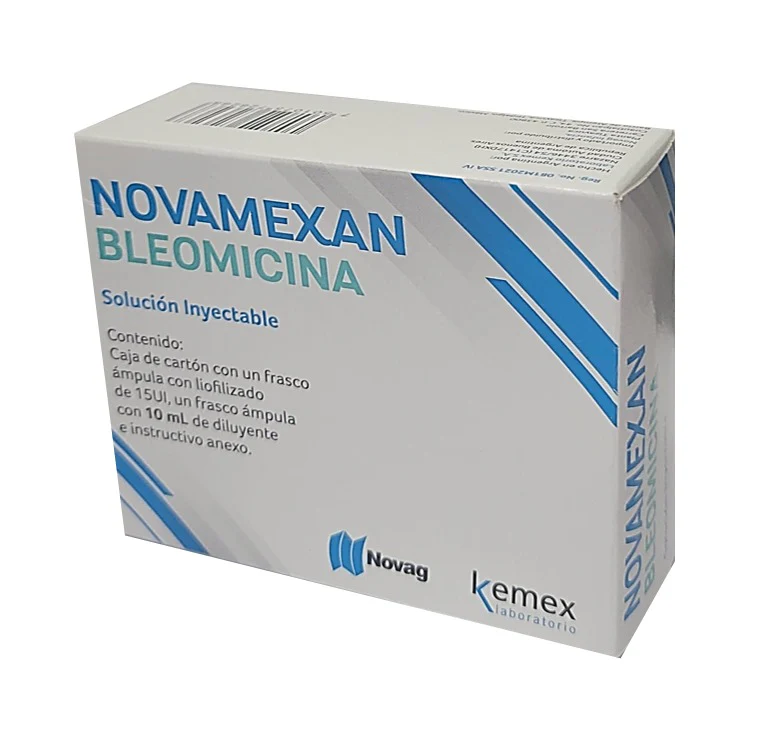
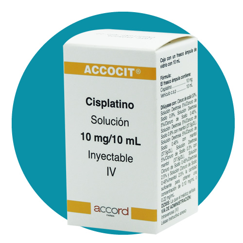

Mecanismo de Acción
- Antibióticos antitumorales (Bleomicina)
Bleomicina se une al ADN y genera radicales libres, lo que causa roturas de cadena simple y doble. Esto inhibe la síntesis de ADN, ARN y proteínas. Actúa preferentemente en fase G2 y M.
- Agentes variados de unión al DNA (Cisplatino)
Cisplatino forma enlaces cruzados (crosslinks) entre cadenas de ADN, interfiriendo con su replicación y transcripción. Actúa en todas las fases del ciclo celular, aunque más en G1-S.
Indicaciones Terapéuticas
- Antibióticos antitumorales (Bleomicina)
- Linfoma de Hodgkin y no Hodgkin (ABVD)
- Carcinoma de células germinales testiculares y ováricos
- Carcinoma de cuello uterino, escamoso de piel, cabeza y cuello
- Efusión pleural maligna (uso intrapleural)
- Agentes variados de unión al DNA (Cisplatino)
- Cáncer testicular (con bleomicina y etopósido)
- Cáncer de ovario
- Cáncer de vejiga
- Cáncer de pulmón (microcítico y no microcítico)
- Cáncer de cabeza y cuello
- Cáncer gástrico, esofágico, cervicouterino, entre otros
Contraindicaciones
- Antibióticos antitumorales (Bleomicina)
- Hipersensibilidad a bleomicina
- Enfermedad pulmonar preexistente (riesgo de fibrosis pulmonar)
- Embarazo (riesgo teratogénico)
- Lactancia
- Agentes variados de unión al DNA (Cisplatino)
- Hipersensibilidad al platino
- Insuficiencia renal severa
- Mielosupresión severa
- Hipoacusia preexistente
- Embarazo y lactancia
Posología
- Antibióticos antitumorales (Bleomicina)
- IV, IM, SC o intrapleural
- Dosis típica: 10-20 U/m²/semana, hasta dosis acumulada máxima de 400 unidades (por riesgo de fibrosis pulmonar)
- Agentes variados de unión al DNA (Cisplatino)
- IV: 50-100 mg/m² cada 3-4 semanas, en combinación con otros citotóxicos
- Hidratar al paciente antes y después (prevención de nefrotoxicidad)
Reacciones adversas
- Antibióticos antitumorales (Bleomicina)
- Fibrosis pulmonar (dosis-dependiente): principal toxicidad, puede ser irreversible
- Neumonitis
- Fiebre, escalofríos
- Reacciones cutáneas: eritema, hiperpigmentación
- Mucositis
- Alopecia
- Agentes variados de unión al DNA (Cisplatino)
- Nefrotoxicidad (requiere hidratación)
- Ototoxicidad (acúfeno, pérdida auditiva irreversible)
- Náuseas y vómitos severos (altamente emetógeno)
- Mielosupresión (moderada)
- Neuropatía periférica
- Hipomagnesemia, hipocalcemia
- Alopecia
Interacciones medicamentosas
- Antibióticos antitumorales (Bleomicina)
- Oxígeno en altas concentraciones: aumenta toxicidad pulmonar
- Agentes mielosupresores: potencialización de toxicidad
- Agentes variados de unión al DNA (Cisplatino)
- Aminoglucósidos o furosemida: mayor riesgo de ototoxicidad y nefrotoxicidad
- Alopurinol: potencia mielosupresión
- Vacunas vivas: contraindicado
Presentacións
- Antibióticos antitumorales (Bleomicina)
- Vial liofilizado de 15 UI o 30 UI para reconstituir (IV, IM o intrapleural)
- Agentes variados de unión al DNA (Cisplatino)
- Solución inyectable: frascos de 10 mg, 50 mg y 100 mg/10 ml
- Siempre IV (infusión lenta)